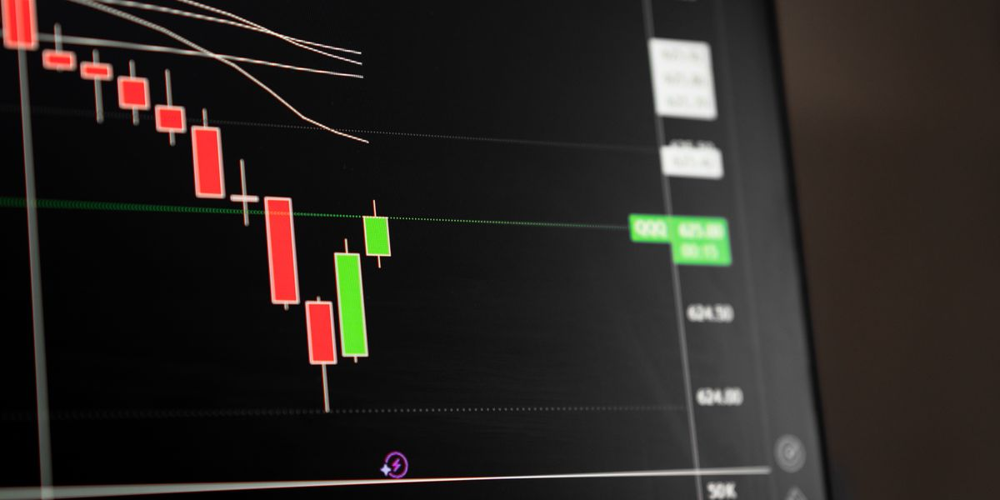

مقدمة: ما هو التحليل الفني؟
التحليل الفني (Technical Analysis) هو دراسة حركة الأسعار التاريخية من خلال الرسوم البيانية (الشارتات) بهدف التنبؤ بالاتجاه المستقبلي للسعر. يقوم التحليل الفني على فرضية بسيطة لكنها عميقة: السعر يعكس كل شيء. أي أن جميع المعلومات المتاحة — الأخبار، الأرباح، التوقعات، حتى مشاعر المتداولين — كلها منعكسة بالفعل في حركة السعر.
لا يهتم المحلل الفني بما تفعله الشركة أو كم تربح. ما يهمه هو: ماذا يقول الشارت؟ هل السعر يتجه للأعلى أم للأسفل؟ هل هناك نمط معين يتكرر؟ هل حجم التداول يؤكد الحركة أم يناقضها؟ هذه الأسئلة هي جوهر التحليل الفني، وإجاباتها هي ما يبني عليها المتداول المحترف قراراته.
ما الفرق بين التحليل الفني والتحليل الأساسي؟
كثيراً ما يتساءل المبتدئون: أيهما أفضل، التحليل الفني أم التحليل الأساسي؟ الحقيقة أن كلاهما أداة مهمة، لكنهما يخدمان أغراضاً مختلفة:
- التحليل الأساسي (Fundamental Analysis): يركز على دراسة البيانات المالية للشركة — الإيرادات، الأرباح، نسبة الدين، معدل النمو — لتحديد القيمة الحقيقية (العادلة) للسهم. يسأل: هل هذه الشركة تستحق هذا السعر؟ يُستخدم بشكل رئيسي في الاستثمار طويل الأجل.
- التحليل الفني: يركز على دراسة حركة السعر والحجم على الشارت لتحديد أفضل نقاط الدخول والخروج. يسأل: متى أشتري ومتى أبيع؟ يُستخدم بشكل رئيسي في التداول النشط (Swing Trading و Day Trading).
الأمثل هو الجمع بين الاثنين — استخدام التحليل الأساسي لاختيار الشركات القوية، والتحليل الفني لتحديد التوقيت المناسب للدخول والخروج. وهذا بالضبط ما يُطبقه منهج مارك مينرفيني (Mark Minervini) الذي يُدرَّس في TD Academy.
لماذا يعتمد المتداولون المحترفون على التحليل الفني؟
ليس مصادفة أن أنجح المتداولين في التاريخ — مثل جيسي ليفرمور، ويليام أونيل، ومارك مينرفيني — كانوا جميعاً من أنصار التحليل الفني. إليك الأسباب التي تجعل التحليل الفني لا غنى عنه:
- التوقيت: التحليل الأساسي قد يخبرك أن سهماً ما مقيّم بأقل من قيمته، لكنه لا يخبرك متى سيبدأ بالارتفاع. التحليل الفني يحل هذه المشكلة — يخبرك بالتوقيت المناسب للدخول والخروج.
- إدارة المخاطر: من خلال مستويات الدعم والمقاومة، يستطيع المتداول تحديد نقطة وقف الخسارة (Stop Loss) بدقة. هذا يعني أنك تعرف مسبقاً كم ستخسر إذا ذهبت الصفقة ضدك.
- الموضوعية: الشارت لا يكذب ولا يجامل. الأرقام واضحة أمامك. هذا يقلل من تأثير المشاعر والآراء الشخصية على قراراتك.
- القابلية للتكرار: أنماط الأسعار تتكرر لأن سلوك البشر يتكرر. الخوف والطمع لا يتغيران. لذلك فإن الأنماط التي نجحت في الماضي غالباً ما تنجح في المستقبل.
- السرعة: يمكنك تحليل عشرات الأسهم في دقائق من خلال مسح الشارتات. بينما يحتاج التحليل الأساسي ساعات لدراسة بيانات شركة واحدة.
"الشارت هو لغة السوق. إذا لم تتعلم قراءته، فأنت تتداول وأنت أعمى. كل قرار تداول يجب أن يبدأ وينتهي عند الشارت."
— د. حسين طاحون
أدوات التحليل الفني الأساسية
لا تحتاج إلى عشرات المؤشرات المعقدة لتصبح محللاً فنياً ناجحاً. في الحقيقة، البساطة هي سر القوة. إليك الأدوات الأساسية التي يجب أن يتقنها كل متداول:
1. الشموع اليابانية (Candlesticks)
الشموع اليابانية هي الطريقة الأكثر شيوعاً لعرض حركة الأسعار. كل شمعة تعرض أربع معلومات: سعر الافتتاح، أعلى سعر، أدنى سعر، وسعر الإغلاق. لون الشمعة يخبرك إن كان السهم أغلق أعلى من الافتتاح (خضراء/بيضاء) أو أدنى (حمراء/سوداء). تعلّم قراءة أنماط الشموع اليابانية يمنحك نظرة فورية على مزاج السوق.
2. خطوط الاتجاه (Trend Lines)
الاتجاه (Trend) هو الصديق الأول للمتداول. القاعدة الذهبية تقول: "تداول مع الاتجاه، لا ضده." خطوط الاتجاه تساعدك على تحديد ما إذا كان السهم في اتجاه صاعد (Uptrend)، هابط (Downtrend)، أو يتحرك في نطاق عرضي (Sideways). رسم خط اتجاه بسيط بربط القيعان الصاعدة يعطيك صورة واضحة عن مسار السهم.
3. مستويات الدعم والمقاومة (Support & Resistance)
الدعم هو مستوى سعري يميل السهم إلى التوقف عن الهبوط عنده والارتداد منه. المقاومة هي مستوى يميل السهم إلى التوقف عند الارتفاع إليه والتراجع عنه. هذه المستويات تمثل مناطق صراع بين المشترين والبائعين، وكسرها أو اختراقها يُعتبر إشارة مهمة جداً.
4. حجم التداول (Volume)
الحجم هو عدد الأسهم المتداولة خلال فترة معينة، وهو "مقياس الصدق" في التحليل الفني. ارتفاع السعر مع حجم كبير يؤكد قوة الحركة. ارتفاع السعر مع حجم ضعيف يثير الشكوك. تعلّم قراءة الحجم بجانب السعر هو مهارة تميز المتداول المحترف عن الهاوي.
5. المتوسطات المتحركة (Moving Averages)
المتوسطات المتحركة تعمل كـ "فلتر" لحركة السعر، فتخفي التقلبات اليومية وتُظهر لك الاتجاه العام. المتوسط المتحرك لـ 50 يوماً (MA50) و 200 يوم (MA200) هما الأكثر استخداماً. عندما يكون السعر فوق هذه المتوسطات، يُعتبر السهم في اتجاه صاعد، والعكس صحيح.
أخطاء شائعة في التحليل الفني
كثير من المتداولين يتعلمون التحليل الفني لكنهم يقعون في أخطاء تُبطل فعاليته. إليك أبرز هذه الأخطاء وكيف تتجنبها:
- الإفراط في استخدام المؤشرات: إضافة عشرة مؤشرات على الشارت لا يعني تحليلاً أفضل — بل يعني فوضى بصرية وإشارات متناقضة. القاعدة: اختر 2-3 أدوات وأتقنها بعمق.
- تجاهل السياق العام (Context): تحليل شارت الـ 5 دقائق بدون النظر إلى الشارت اليومي أو الأسبوعي هو كمحاولة فهم فيلم من مشهد واحد. ابدأ دائماً بالإطار الزمني الأكبر ثم انزل تدريجياً.
- التأكيد المتحيز (Confirmation Bias): البحث عن إشارات تدعم رأيك وتجاهل الإشارات المعاكسة. المتداول الناجح يسأل: "ما الذي يمكن أن يفشل في هذه الصفقة؟" قبل أن يسأل: "لماذا ستنجح؟"
- عدم انتظار التأكيد: الدخول في صفقة بناءً على "توقع" اختراق أو ارتداد بدل انتظار حدوثه فعلاً. الصبر هو أعظم أدوات المتداول.
- تجاهل إدارة المخاطر: حتى أفضل تحليل فني في العالم لن ينفعك إذا لم تحدد وقف الخسارة وحجم المركز المناسب. التحليل الفني يخبرك أين تدخل، وإدارة المخاطر تحميك إذا أخطأت.
كيف تتعلّم التحليل الفني بالطريقة الصحيحة؟
تعلّم التحليل الفني من مقاطع يوتيوب عشوائية أو كتب متفرقة يشبه محاولة بناء بيت بدون مخطط — ستنتهي بأساس ضعيف وجدران مائلة. الطريقة الصحيحة هي التعلّم المنهجي والمتدرج.
في منهج Trading Doctor Academy، خصصنا الموسم الثاني والموسم الثالث بالكامل لتعليم التحليل الفني من الأساسيات إلى المستوى المتقدم:
- الموسم الثاني: يغطي أساسيات قراءة الشارت — الشموع اليابانية، خطوط الاتجاه، الدعم والمقاومة، الحجم، المتوسطات المتحركة، والأنماط السعرية الأساسية. كل درس مدعوم بأمثلة حقيقية من السوق الأمريكي.
- الموسم الثالث: ينتقل إلى التحليل الفني المتقدم — أنماط الأسعار المتقدمة (VCP, Cup & Handle, Flat Base)، مؤشرات القوة النسبية، تحليل القطاعات والمجموعات الصناعية، وبداية بناء استراتيجية تداول متكاملة.
المنهج مبني على أسلوب مارك مينرفيني — أحد أعظم المتداولين في التاريخ — وقد صيغ بالكامل باللغة العربية ليناسب المتداول العربي الذي لم يجد مرجعاً عربياً متكاملاً من قبل.
الخلاصة
التحليل الفني ليس خياراً — بل هو ضرورة لكل من يريد التداول بشكل احترافي. هو اللغة التي يتحدث بها السوق، والأداة التي تمنحك ميزة على الآخرين. لكن كأي مهارة، يجب أن يُتعلّم بالطريقة الصحيحة: منهج متدرج، أمثلة حقيقية، وتطبيق عملي مستمر.
لا تضيع وقتك في التعلّم العشوائي. ابدأ من الأساس وابنِ معرفتك لبنة لبنة. هذا هو الطريق الوحيد للوصول إلى مستوى التداول الاحترافي.
التعليقات